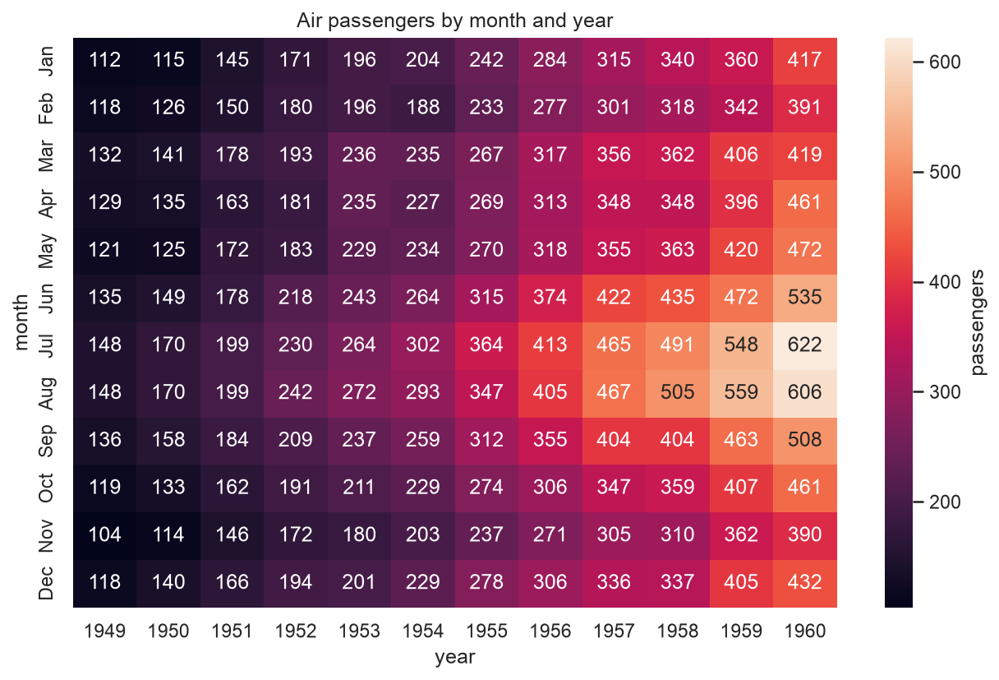
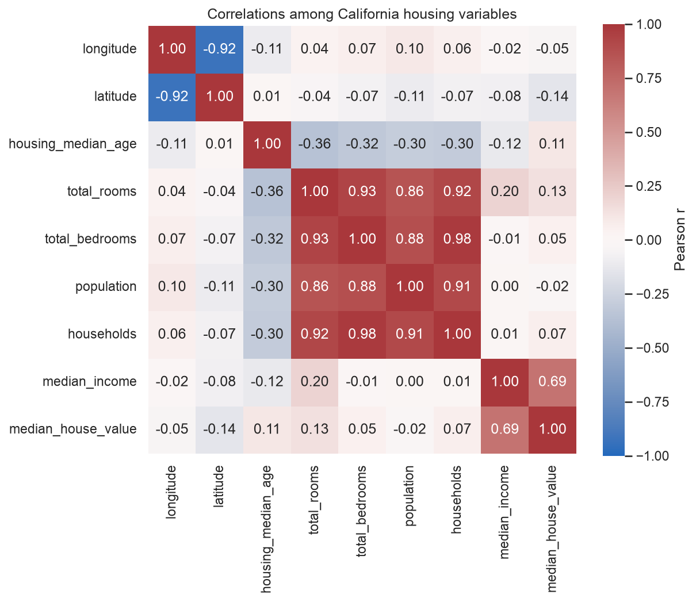
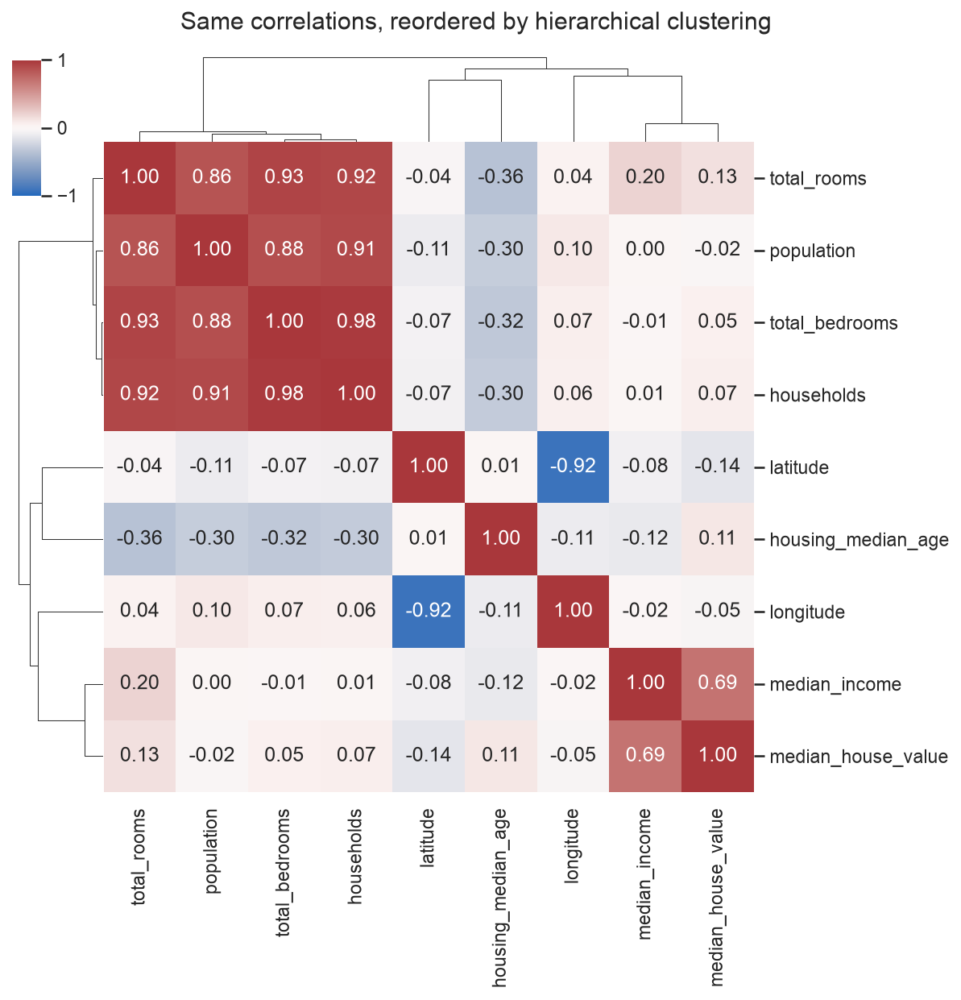

Home › 4 · Matrices & correlation
4 · Matrices & correlation
what structure is there across a two-way grid of values, or across many variables at once?
| Function | Level | Dataset | In one line |
|---|---|---|---|
heatmap (pivot) | axes | flights | a wide table of one value, encoded as colour |
heatmap (correlation) | axes | california_housing | df.corr() drawn as colour, diverging around 0 |
clustermap | figure | california_housing | the same matrix, rows/columns reordered by hierarchical clustering |
heatmap gets its two standard uses (a pivot table and a correlation matrix); clustermap is fed that same correlation matrix so the "before / after reordering" comparison is direct. Each ends by saving a PNG to images/.
Imports for this notebook
import matplotlib.pyplot as plt
import pandas as pd
import seaborn as sns
from load_data import load_data
sns.set_theme(style="whitegrid")
flights = sns.load_dataset("flights")
housing = load_data("california_housing")
# The numeric columns of the housing data, and their correlation matrix —
# reused by the second heatmap and by clustermap.
housing_num = housing.select_dtypes("number")
housing_corr = housing_num.corr()
heatmap — a pivot table
Axes-level. Takes data already in wide / matrix form and paints each value as
a coloured cell. You do the reshape (pivot, crosstab, groupby().unstack())
first.

flights_wide = flights.pivot(index="month", columns="year", values="passengers")
sns.heatmap(
flights_wide,
annot=True, fmt="d",
cmap="rocket",
cbar_kws={"label": "passengers"},
ax=ax,
)
ax.set_title("Air passengers by month and year")
Best for
- Reading a pattern off a two-way grid at a glance — here the summer peak (rows) and the steady year-on-year growth (columns) are both obvious.
annot=Trueprints the value in every cell (fmt="d",".2f", …) — legible up to a few dozen cells, not hundreds.- Match the colormap to the data: a sequential ramp (
rocket,mako,viridis) for magnitudes that build from a floor, as here. - The palette changes for the next chart on purpose — it is a diverging one there, because correlations have a meaningful zero, while passenger counts do not. Matching the colormap to the data is the point, not consistency for its own sake.
- Not for continuous x / y — that is a 2-D histogram or
kdeplot. And when exact numbers matter more than the shape, a plain table beats a heatmap.
heatmap — a correlation matrix
The other everyday use: df.corr() → heatmap, to see which variables move
together.

sns.heatmap(
housing_corr,
annot=True, fmt=".2f",
cmap="vlag", center=0, vmin=-1, vmax=1,
square=True,
cbar_kws={"label": "Pearson r"},
ax=ax,
)
ax.set_title("Correlations among California housing variables")
Best for
- A fast scan for redundancy and for likely predictors before modelling.
- Use a diverging palette with
center=0(andvmin=-1, vmax=1) so +0.4 and −0.4 look equal-and-opposite and zero is colourless — a sequential ramp here would be misleading. square=Truekeeps the cells square; pass a triangularmask(vianp.triu) to hide the redundant half.- Read the blocks:
total_rooms,total_bedrooms,populationandhouseholdsare all ~0.9 correlated (they all scale with block size) — a cue to combine or drop before a regression.
clustermap
Figure-level. A heatmap whose rows and columns are reordered by hierarchical clustering, with dendrograms drawn on the margins. Fed the same correlation matrix as above — so this is that heatmap, rearranged so related variables sit together.

g = sns.clustermap(
housing_corr,
cmap="vlag", center=0, vmin=-1, vmax=1,
annot=True, fmt=".2f",
figsize=(8, 8),
dendrogram_ratio=0.12,
cbar_pos=(0.02, 0.83, 0.03, 0.14),
)
g.figure.suptitle("Same correlations, reordered by hierarchical clustering", y=1.02)
Best for
- Letting the structure sort itself: similar rows / columns end up adjacent, so blocks of correlated variables form a visible square on the diagonal (here the four "size" columns collapse into one block, with
median_income/median_house_valueset apart). - The dendrogram heights show how distinct the groups are.
z_score=/standard_scale=to normalise before clustering;method=andmetric=change the linkage; sample the rows first if the matrix is tall (distances are O(n²)).- Not when the existing order carries meaning (time, rank, a designed sequence) — the reordering throws that away. Use a plain
heatmapthen.